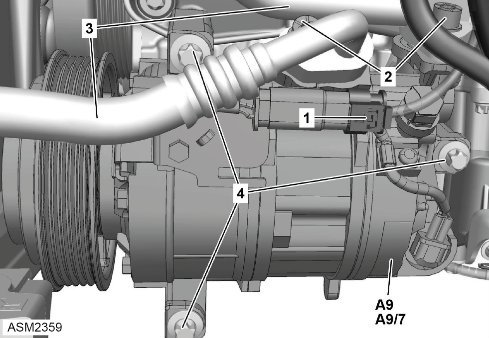

Air Conditioning Compressor - 4 Cylinder
Print
Operation Code: 40.23.01-02
Removal
- Recover Air Conditioning (AC) refrigerant. Refer to procedure.
- Release tension from auxiliary drive belt and remove from AC compressor pulley. Refer to procedure.
- Remove rear bulkhead access panel. Refer to procedure.

- Disconnect harness connector (1) from AC compressor (A9).
- Remove bolts (2) (x2) securing AC refrigerant lines (3) to AC compressor. Torque 20 Nm.
- Disconnect AC refrigerant lines from AC compressor.
NOTE: Plug exposed connections to prevent ingress of dirt.
- Remove bolts (4) (x3) securing AC compressor to engine. Torque 20 Nm.
- Remove AC compressor.
NOTE: If fitting new compressor, retain old compressor to measure oil quantity measurement.
Installation
- Installation is the reverse of removal procedure except for the following:
- Drain and measure AC compressor oil quantity.
NOTE: If the existing compressor is to be refitted after normal refrigerant recovery has been performed, a quantity of oil equivalent to that recovered must be added to that already held in the compressor.
NOTE: If the system has suffered a rapid discharge, most of the refrigerant oil will have been lost. Drain the remaining oil from the compressor. Refill with 130g of oil before installation.
- Renew O-rings with new refrigerant oil.
- Recharge AC refrigerant.
- With AC compressor fitted, perform the following running in procedure:
 WARNING: The running in procedure described below must be performed so that refrigerant oil does not exit the compressor sump and flow directly into the air conditioning hoses/pipes before first circulating around the compressor, this ensures the compressors internal components are fully lubricated.
WARNING: The running in procedure described below must be performed so that refrigerant oil does not exit the compressor sump and flow directly into the air conditioning hoses/pipes before first circulating around the compressor, this ensures the compressors internal components are fully lubricated.
- Start engine.
- Turn on air conditioning to maximum cold setting.
- Allow engine to idle for 2 minutes while monitoring performance.
- Check for any leaks of AC refrigerant or oil.